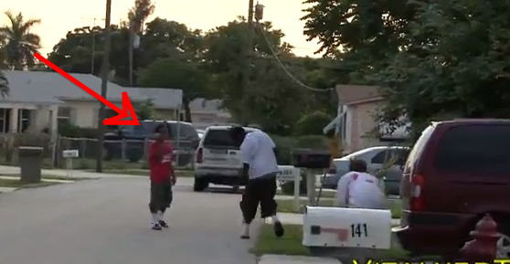
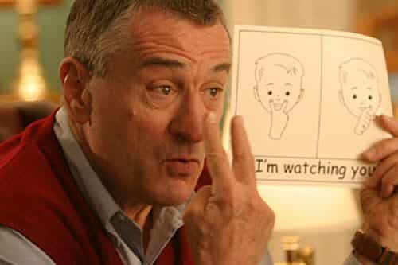

Daryush "Roosh" Valizadeh created ROK in October 2012. You can visit his blog at RooshV.com or follow him on Twitter and Facebook.


Vitaly’s ballsy pranking of Miami citizens has quickly turned him into a Youtube sensation with over one million subscribers for his VitalyzdTv channel. His videos are entertaining and even educational (the above video has taught tens of thousands of men how easy getting a phone number can be). But the skeptics on RVF and Misc can no longer remain silent in the face of some disturbing inconsistencies.
Here’s a video where he gets 40 second kisses from direct approaching during the day:
I believed this video was real because Vitaly has stated in an interview that it takes him hundreds of attempts to get just ten final responses for a clip. It’s plausible that women in Miami wouldn’t mind a man kissing them that fast. But Samseau pointed out how one of the girl’s he kissed is actually overweight porn star Katie Cummings (presumably not her real name):
Coincidence? Or is her response around 0:48 just bad porn acting?
In End Of The World (1:28) and Taking Pictures Of Strangers (1:45), the same man makes an appearance:
Coincidence? Or is he using Craigslist actors to get the reactions that don’t come naturally?
His zombie attack prank is his top clip, garnering over 20 million views, but there are repeat appearances by two black guys, and the first one appears to be smiling before he “runs” away:

The beginning of this video seems undoubtedly fake. What man climbs a tree like a monkey because someone made weird noises at him?
I don’t know anything about Vitaly’s character, but he is from Russia, a part of the world has no shame in taking shortcuts in order to achieve an end. I say this as someone who has lived in Ukraine for three long months.
Typical Ukraine
My take: I think most of the reactions you see in his videos are real, but if the final result of his work is determined through the randomness of approaching strangers, I can see him hiring an actor or two in order to maintain quality. High expectations to keep his channel growing while satisfying his existing fans may have caused him to lessen the chance element in approaching hundreds of people a day for original responses that can be more easily hired out.
This article is not meant to hate on Vitaly, but to keep him honest. I am rooting for his success, but I—along with most other people—don’t like being deceived. If you want to act then act, but leave a disclaimer so people understand they are watching fantasy instead of real life. I’ll continue to watch Vitaly, but with a bit more skepticism than before.

Read Next: The 10 Most Overrated Female Celebrities